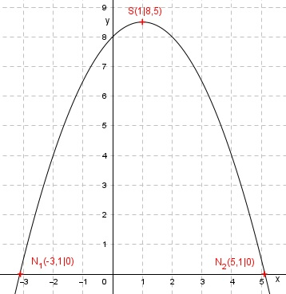

Aufgabe 67 Welche Koordinaten haben der Scheitelpunkt S und die Nullstellen N der Funktion y = -0,5x2 + x + 8? y = -0,5x2 + x + 8 |:(-0,5) y - ----- = x2 - 2x - 16 0,5 Quadratische Ergänzung: y - ----- = x2 - 2x + 1 - 1 – 16 0,5 mit x2 - 2x + 1 = (x – 1)2 y - ----- = (x - 1)2 - 17 |*(-0,5) 0,5 y = -0,5(x – 1)2 + 8,5 Dies ist die Scheitelpunktform. S abgelesen: S(1|8,5) Nullstellen: y = 0 0 = -0,5x2 + x + 8 |:(-0,5) 0 = x2 - 2x - 16 p, q – Formel : p = -2 ; q = -16 x1,2 = 1 ± 4,1 x1 = 1 – 4,1 = -3,1 x2 = 1 + 4,1 = 5,1 N1(-3,1|0) ; N2(5,1|0) 